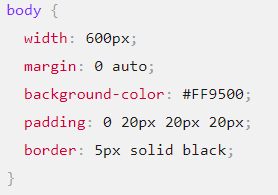

Cours CSS
Plan
Introduction
Les CSS (Cascading Style Sheets en anglais, ou « feuilles de style en cascade ») sont le code utilisé pour mettre en forme une page web. Les bases des CSS présentent ce qu'il faut savoir pour commencer. Nous répondrons à des questions comme : Comment rendre mon texte rouge ou noir ? Comment faire apparaître mon contenu à tel endroit de l'écran ? Comment décorer ma page web avec une image ou une couleur d'arrière-plan ? CSS ( Cascading Style Sheets ) : Une feuille de style CSS est un langage informatique ( langage CSS ) qui décrit la présentation des documents HTML, XHTML et XML. Les standards définissant le code CSS sont publiés par le World Wide Web Consortium (W3C).

Les bases de CSS
Les différentes parties se nomment :
- Sélecteur
- Déclaration
- Propriétés
- Valeur de la propriété
- Les différents types de sélecteurs
- Mettre en forme le corps de page 
C'est le nom de l'élément HTML situé au début de l'ensemble de règles. Il permet de sélectionner les éléments sur lesquels appliquer le style souhaité (en l'occurence, les éléments p). Pour mettre en forme un élément différent, il suffit de changer le sélecteur.
C'est une règle simple comme color: red; qui détermine les propriétés de l'élément que l'on veut mettre en forme.
Les différentes façons dont on peut mettre en forme un élément HTML (dans ce cas, color est une propriété des éléments p). En CSS, vous choisissez les différentes propriétés que vous voulez utiliser dans une règle CSS.
À droite de la propriété, après les deux points, on a la valeur de la propriété. Celle-ci permet de choisir une mise en forme parmi d'autres pour une propriété donnée (par exemple, il y a d'autres couleurs que red pour la propriété color).
Il y a différents types de sélecteurs. Dans les exemples précédents, nous n'avons vu que les sélecteurs d'élément qui permettent de sélectionner les éléments HTML d'un type donné dans un document HTML. Mais ce n'est pas tout, il est possible de faire des sélections plus spécifiques. Voici quelques-uns des types de sélecteur les plus fréquents :
| Nom du sélecteur | Ce qu'il sélectionne | Exemple |
| Sélecteur d'élément (parfois appelé « sélecteur de balise » ou « sélecteur de type ») | Tous les éléments HTML d'un type donné. | p sélectionne tous les < p > |
| Sélecteur de classe | Les éléments d'une page qui sont de la classe donnée (pour une page donnée, il est possible d'avoir plusieurs éléments qui partagent une même classe). | .my-class sélectionne < p class="my-class"> et < a class="my-class!"> |
| Sélecteur d'attribut | Les éléments de la page qui possèdent l'attribut donné. | img[src] sélectionne < img src="monimage.png"> mais pas < img > |
Les propriétés de CSS
Les propriétés raccourcies sont des propriétés CSS qui permettent de définir la valeur de plusieurs propriétés via une seule déclaration. En manipulant des propriétés raccourcies, un développeur web peut créer des feuilles de style plus concises et plus lisibles, améliorant ainsi la maintenabilité. La spécification CSS définit les propriétés raccourcies en regroupant la définition des propriétés agissant sur le même aspect de l'élément. Ainsi, la propriété background est une propriété raccourcie qui permettra de définir background-color, background-image, background-repeat et background-position. De même, les propriétés fréquemment utilisées pour la mise en forme des polices de caractères (font) peuvent être définies via la propriété raccourcie font et celles qui concernent la marge avec la propriété raccourcie margin.